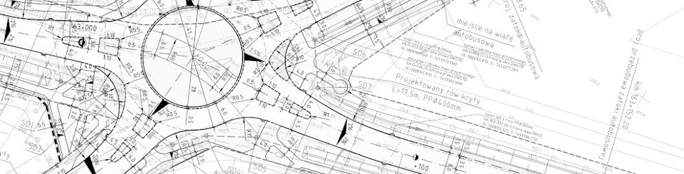

projektowanie dróg,
zjazdów,
układów komunikacyjnych dróg wewnętrznych
i parkingów
W ramach działalności wykonujemy wielobranżowe dokumentacje projektowe dla budowy nowych odcinków dróg oraz dla rozbudowy i przebudowy istniejących dróg publicznych. Dokonujemy także licznych analiz możliwości zapewnienia dostępu do dróg publicznych dla skomunikowania inwestycji niedrogowych oraz procedujemy wszelkie uzgodnienia dla uzyskania niezbędnych decyzji administracyjnych. Wykonujemy też kompleksowe dokumentacje projektowe dla układów dróg wewnętrznych i parkingów.
Dla każdego z zadań inwestycyjnych wykonujemy analizy, projekty koncepcyjne, wielobranżowe projekty budowlane i wykonawcze. Szczegółowe specyfikacje techniczne wykonania i odbioru robót budowlanych oraz przedmiary i kosztorysy są integralną częścią wykonywanej przez nas dokumentacji projektowej.
inżynieria ruchu drogowego
Wykonujemy analizy ruchu dostosowane do charakteru i funkcji przedsięwzięcia inwestycyjnego. Dla potrzeb sporządzenia analizy wykonujemy niezbędne pomiary natężenia ruchu oraz sporządzamy prognozy ruchu. Specjalizujemy się w wykonywaniu projektów stałej organizacji ruchu oraz projektów czasowych organizacji ruchu na czas wykonywania i zabezpieczania robót drogowych.
audyty bezpieczeństwa ruchu drogowego
Wykonujemy niezależne audyty bezpieczeństwa ruchu drogowego w różnych stadiach procesu inwestycyjnego. Dokonujemy sprawdzenia i oceny dokumentacji projektowej, w każdym jej stadium, pod kątem ryzyka wystąpienia zagrożenia wypadkowego wobec wszystkich użytkowników dróg.